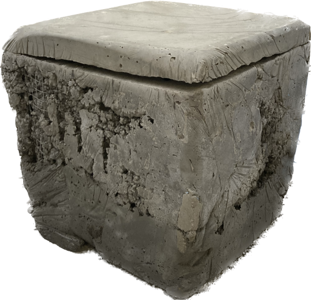

shoutout
CELINE DION
Every night in my dreams I see you, I feel you That is how I know you go on Far across the distance And spaces between us You have come to show you go on Near, far, wherever you are I believe that the heart does go on Once more, you open the door And you're here in my heart And my heart will go on and on Love can touch us one time And last for a lifetime And never let go 'til we're gone Love was when I loved you One true time I'd hold to In my life, we'll always go on Near, far, wherever you are I believe that link
does go on (why does the heart go on?) Once more, you open the door And you're here in my heart And my heart will go on and on You're here, there's nothing I fear And I know that my heart will go on We'll stay forever this way You are safe in my heart and My heart will go on and onEvery night in my dreams I see you, I feel you That is how I know you go on Far across the distance And spaces between us You have come to show you go on Near, far, wherever you are I believe that the heart does go on Once more, you open the door And you're here in my heart And my heart will go on and on Love can touch us one time And last for a lifetime And never let go 'til we're gone Love was when I loved you One true time I'd hold to In my life, we'll always go on Near, far, wherever you are I believe that the heart does go on (why does the heart go on?) Once more, you open the door And you're here in my heart And my heart will go on and on You're here, there's nothing I fear And I know that my heart will go on We'll stay forever this way You are safe in my heart and My heart will go on and on
̷̟̫̝͙͋̊̂̒ ̵̱̩͚͋͑͗̏͝ ̵̬̳̻̕ ̶̦̗̜̯̲̒̉̈́́̀͜ ̴̩̳̻̞͉̩̓̽͂̿̋͠ ̷͕̑͊͛͛͑͘ ̴͚͈͋͒ͅͅ ̴͔̲̣̮͛̈́͒Ĕ̶͕̳̦̹͚̈́͝ͅv̵̹̺͎̹͍̰͋̒̓e̶̢͚̟̕ṟ̸̮̆̌̀͘ỵ̴̜͒͂̽̈ ̷̢̱̓͋̀͌͝n̶̬͐̽͆̄͝i̵̢̛̭̝̙͚̋̀͛͋ǵ̶̩̞̰̋͜ḧ̷͕̦́̄̾̇̑́ẗ̴̢̢̲̬̰̩́̅ ̴̙̜̑͗i̸̦͋̀̌̉̈́̚n̴̢̛̗̦͔̈͐̇͗̇ ̶͍̮̤͙̿̎̅̀m̴̱̺͈̩͆̀͆ỳ̸̡̝͑ ̷͕̲̩̠̐̄̂̀̚d̵̰͚̰̤͔̖̈͌̑͋̈́̕r̶̗͋̐͆ě̸̢̮̆̈́a̴̳̅͛m̴͖̭͈̮̰͉̒͗ṣ̵̘͕͉̔̃͘͜ ̴̡̡̛̂̓͒̋ ̷̡͙̎̆̔ ̷̡̛͈̜͔͆̃͝ ̵̧̤͎̥̘̩́͒ ̷̹͎̫͛͝ ̵͉̪̼̩͐̒ ̴͉̙̟̦̘̆ ̸̧͇͔͋͐͆̿̚͜͠ ̴̬͍͇̀͛͜Ǐ̴̛̱͍̠͇̳̜̐̿̚͝ ̸̧͙̊͊͒͒͆ͅṡ̴̹̪͇̟͗̀͌̍͜ẻ̵̤̲̥̣̺̈́͊́͌ẻ̷̳͇̭̻̠̈́͆ ̷̲͉̫̓̈́͛̈̕ẙ̴̜̤̐̽͠͝ǫ̵̢̯̱̑͆̃͘ͅư̸̩͇͓͑̎̍͝,̴͚̞̙͙͑̒̾̽͘ ̷͚̭̈̈̓͠͝͠Į̶̬̘̻̦̉̓́̾̓͜ ̸̛̟̮͒̂̔̋̔f̶̡̛̙̼̖̺̆̉͋͝e̵̝̝͈̬̓̎͝ë̵̟̞̣́́l̸͉̀̎̐͑͘͜ ̷̨̟͉͕̇̎̚ÿ̴͚͇͎́̃͗̃o̶͕͔̼̒̆͛̆̈͝u̴̟͌̓̓̈́ ̶̨̬͓͔͚̃̂͋ ̶̫̙̮̣̾́̈ ̷͉̒̅̄̅̉ ̵̨̝̜͙̟̓̐̑͘͝ ̴̥̮̘̏̊̚͠ ̵̠͉͔̩̈́͂͗̏͂͝ ̷͉͉̅ ̶̡̗͉̇̿̌̀̈́̔͜ ̸̠̣͐̽͂Ṯ̶̌̑h̷͓̯̳̠̔͛́̕͝ͅǡ̶̭̝̪̖̼̎̔͛t̸̫̝̳̿̈́̄͜ ̷͉̩͈͑̃i̷̭̒š̸̭̘̖̣ ̶̢̥͔̱͆̄h̸̤̮͌̎̈́ǫ̷̳͈͒̈́̂w̶̳͖̲̯͔̳̅͒͗͂̓ ̸̥̿͂̚͠I̶̧̗̼̥͂̈͋̕͜͠͝ ̷̛̣̅̏̈́́̚k̷͕̱͋̓͐ǹ̸̺̘̋͑̔̚̕͜͜ͅo̸̧͙͚̗͗͠͠ͅw̶̡͉̩͓̖͊̈́̉̀̚ ̷̘̥̩̜͍͒y̷̪͆̐͝ó̵͓̳̙̙͙̦͊͠u̶̙̟͈͊̈́́ ̵̨͔̺͖̼͉͌̿g̷̡̳̫͎͓͊o̷̧̢̟̞̪̒ ̸̠͉͚̝̜͂͛̽̂o̸̢̦̻͓͉̰̅͑͂͠n̴͎̘̭͔̞̄͋̊͒̽̈́͜ ̴͉̎̀ ̴̳̰͎̟̖̑̒͆ͅ ̴͚̘̫̼̜̤̋͛̓ ̷̢̠̲͙̰̫̓̾̃̓̚͝ ̸̥̹͂̎ ̵̧͓̞̲̲̗̌̑ ̶̺̹͐͜͜ ̴̻̳̙͗̈ ̵͎̙͍̟̱̈̊̒F̵̧͎̭̣͖̏͐̈́ǎ̵̖̬̜̫̦r̴̜̞̂̇͐ ̸̙̐̉́͐͘á̸̹̜̲͈͒̆͐c̶͓̉r̸̡̼̝̜͊̈o̸͚͓̫̭͒́̎̃͊s̵̡͚̣̘͉̊͛̈́̂s̶̙̓̈́͑̕͝ ̷̝̰͊͝ẗ̸̰͎̰͍́̆̊h̷̦̙̩͚̲̐ͅe̸̠̺͈͐̈́̉ ̷̹̗̯̝̙̋͌͝d̸̻̭̣̏̕i̸͇͗̅́ş̶̛͖͉͊͂̆̓̿t̶̹͉̖͙̲̄͛̎a̸͍͚̓̕n̵̥̝̯͋̿̉c̶̫̳͍̪͕̆̊͌̓͛͝e̸̘͐͗ ̸̡̛̖̖̙̀̈́͋͆͝ ̴̼̠͆̐̉ ̸̨̧̟̩̥͂̿̊͋̔̚ ̸̗̺͚̅̐͐̓͌̕ ̵̡̯̗̱̝̈͗̋̃̔ ̴̨̣͚̜̋ ̵̢͖̜̬͈̋̄̽ ̴̢̟̹͍̈́͗̃̈ ̶̡̇A̴̢̨̺͕̲͎̒͊͋̀̀͠n̵͎̙̞̋͋͐̏d̶͍̻̬̜̳̗͑̂͠ ̷̘̓͊ṣ̷͈̪̼̭͓́͆̒͝p̷̨̹̔̍̋́ą̵̨̳̞̏̅̂͌̍̂c̷̺̤͇̟̆̓e̷̠̺̩͗͒̓͠s̶̥͍͙̠̪͗̀̒̍̚͝ ̵̢̛̛̲̞͖̾̋͜͝b̸̳̣́̈́̔͠͝e̴̻͌́̓̈́͆̈́t̷̨͈͕͕͉̏͐̿̒́w̸̩̮̭̒̅̄ȇ̴̮̭̓̆̂̂̄ê̶͕͓̯̬̰̑̒͑͘n̷̩͖̋̓̀̃̈́ ̶̡̖͕̖̟̾̏͋u̸͖͙̳̗̺̇s̷̱̥̎͂͠ ̶͓̗̗͎̮̎̅ ̷̛̛͈̟͙͈̍̓́͝ ̴̨̛̟̠̥̩̏̚̚ ̷̻̬̦̤̣͂͗̐̏̍ͅ ̴̳͈̟̽̉̾̄ ̵̛̛́ͅ ̴̢̼̆̑́̆̚ ̴͚͍͉̝̻̿ ̴̨̫̤̯̥͔̓͌Y̷͈̹̖̭̠̺̌̇͗̈̋̓ò̶͙̩̪͔̐ͅǘ̷̺̝̬̌̿̄̃ ̷̙̉̄̃͊h̴̢̲̚a̴͓͉̯̿̄̑̐͜v̸̯͓͈̟̊̌̌͌̏ͅȩ̶̬̼̠̫́̊̂͝ ̶̜̥͓͐̈͛̾͜c̸̢̡̣͍͚̪̿̑̚ȯ̸̖̊̎m̶̞̃̉̂͝͝ȇ̶̘͓̄ ̴͎͎̠̅̂̋͒͊̚ţ̶̰̟͆̋͐̂͠ó̸̢͈́̎͆́̕ ̷̭̯̫̯̦̓͘s̴̳̋h̶̟͉̟̑̐̈́͗̌o̷̼̭̓w̷̞̣̆́ ̵̣̺̓̔͛̑̊̀y̸̝̩̞͓̫͎̕ȍ̶͔̘̪͚͆͋̔u̵͓̳̭̱̱͗̈́́͊̆̚ ̴̧̨̄̌̉g̴͇̼͆ỗ̷̡̲̤͚͇͠ ̶̖̹̋o̴̧̼̤̻̔͊n̵̮̯̏̌͘͘ ̶͉̦̫͇̰͛̈ͅ ̶̥͎̐̅́̈͝ ̶̯̳̥̒̌ ̸̹̺̼͙́̉̿͊͗ ̷͈͓̜̪͚̎̍͛́͝ ̷̛͚͖͕́̕̕ ̶̳͇͈͉̲͓̾͋ ̸̦͔̞͉̺̆̄̈̕͝ ̸̲̘̭̦͑̔̃̇̄͜͝N̴̛̳̓̉͠͠ͅe̶̮͚̼̤͕̮̾̾̎̍͆a̷̙͉̫̟͂͂͘ŗ̶͇̈͋͛́͂̆,̶̳̯̰̃̈͋͂͊͜͝ ̶̳̗̻͖̤̃͆̂̈̈́̓f̵̦͍͛̀̾̆á̴̯͎͋r̵̺̽̿͒̎,̸̹͚̱̱͐̍͆ ̶͈̞̾̈́͒͌͐͘w̷͇̱̱͙͠h̵̢̞̘̜̳͙͛̋̽͗̕͝é̵͙̮͓͔̥̋̃̉͂r̸̛̪͙̬̖̒̅͜e̷̗̟̮͂́͝v̴̡̛̜̼͐̆̍̍e̷̟̖̗͌̿̈́ȓ̷̭͙̊͜ ̴͇́̆͠ý̶̫̹̗̜̍̿̍ö̷̢͎̫͎̘͒̿̾͗͊u̸̱͔͈̇̇͂̆́͜ ̷̺̝͔̦̹͊̂ā̷̇͜͝ṟ̶̪̯̗̄̌̿̄ͅe̵̩͍̠͂̈́͆ ̸̨̬͔̜̞̿̇ ̸̘̮͍͒̾̿̏̊̕ ̸̻̙̥͔͕̅͑͐̿́̃ ̴̼͈͉̏͌͊̊͝ ̸̼̮̖̈͆ ̶̠͉̖̫̾̉̌ ̷̧̉ ̶̨͚̐͋̚͠ ̸̲̳́I̴̬̲͈͖̘̋̿̎͜ ̵͇̣̼̬͛͊̍́̌͝b̶̧̟̈̽ȅ̴̪̼̋̄̓͌͝l̶͍̱̗̂͊̿͒i̸̟̓͌̾̊͝e̵̲̪͎̽͋͜ͅͅv̴͉͖̀̅̇͆̈́͌ḙ̴̫̂̃̃͛ ̴̭̣̦͑̈́̔̽̆͒t̵͚̳̬̋h̸̲̋͗́̿̑́ͅa̵̝̳̥͕̠̽̚t̷̖̘̠̪̞͐̉͒͘ ̴̛̟̩̠̞͑̈́̀͌̈́͜t̷̲͉̜͇̥̍ḫ̴̨̡̟̟̔̂̇͋e̴̡̙͕̮̩̞̽ ̵̡̛̯̰͓̫̃̃͊̈́͒h̵̜̪̮̿ë̸͈͊̃͆̆ã̸͉̉̂̾͒͝ṛ̸̡̢̤͍̋̀́̀̕͠t̷͕̞͂́̀̈́͜ ̵̗͔͑̀͛̿ḍ̷͖͈͑̋͝ö̵̹́̾̀è̵̢̯͕̱͈͜s̶͎̟̖̮̗̽̊͑̊̏ ̵̺̟̗̂͠g̷̨̱̊͗͆͛͝o̵̧̩̰̱̫͋̇͗̎̒ ̴̥̟̈́ő̵̝̗̜̾̄̆̚n̵̥̖͗ ̴͇̞̗͈͔̣͆̓̍͝ ̵̡̱̗̫͖͙̍̈́͝ ̴̨̹̲̫͓̆̇̈́̑͘͝ͅ ̶̧̰̳̗̥͐̆̀̆͜ ̴̮͙͙͚͆̆́̓ͅ ̷̢̞͙̣̹̟̉̃̌͠ ̴͔̟̅͝ ̶̡̻̫̈́̈́͜ ̶̪̪́̑̊̽̓ͅȌ̶̦͚̘̀ǹ̵̺̣͎͖̼̰ĉ̷̜̳̳̙̑̈́̉̃e̴̲̮̤͉͔̖̎̾̓͒́͝ ̶͇̽́m̸̳̱̑͘͠o̶͚̣͖̼̅̑̃̈́̾ͅr̴̘̞̦͔͋̕͜e̵͇̥̘̓̅̓̃̒̾,̷̨̮͓̮̮́͋̈́́ ̴̹̙͍̦̱̆̋̿y̸͈̗̿̉̅̕õ̴̠̎̿̑͌͠ų̴̢̨̳̠̠͛̄͝͠ ̵̬̂́̈o̷͚̯̳̺͠p̴̢̼͓͙̝̦̈̓͐̒͠ẽ̷̯̓ń̸̬͇̲̙̇̋͒ ̴̢̩̮̽̍̓̾̚ṭ̴͐h̷͔̲̎̎̿̋̇e̵̢̢͔̒̿͂̑̿ ̵͈̳̖̉̀̍̈́͗͠d̷̼͉̺͎̬͍̽̓͋̆̿ò̷̘̈́̕͝ǫ̵̥̻̬̆̽̒̈́r̷̡͈̰̝͐ ̵̭̣̟͖̎̕ ̷̘͓͛̕ ̴͕̦͐͑̆͊̉͜͠ͅ ̴̡̩͓͍͔̪̈́̒̀͠ ̸̪̳̜͛̄ ̷̢̉̏ͅ ̴̢̼̞͕͆́͘ ̶̣̫̣̝͕͒́͋ ̶̯̖͙͛A̵̱̿̊̾́̓n̸̫͚̲̽͆d̴͖̦̃͊͒̔ ̸̡͓̝͒͘͝y̸̙̟̼̠̦̒̆͋̿͗o̴̧̟̾̄͗̎͋̓ṳ̷͖̠̪̗͌̄̀̃͆̾͜'̸̨̛̲̼̮̑̕͘͠͝r̴̪̙̣̘͖͂̓ͅē̴̛̲̞̲̣͋̕ ̸̳̰̥̣̖̻̉͋̉͋̀̅h̷͖̰̬̾͊͋͆͗̃ȩ̵͇̫̮̔̔̌̕r̸̦̼̮͛͆͊͜͝e̵̘̓̿̽ ̷̭̫̃̆̕ì̶̫̆̀͒n̷͈̄̓ ̵̨͉̘͓̽́͋̐͘ͅm̸̈́̈́͜y̸͈̣̥̓͐͊̓̀ ̵͖̓h̷͙̜̲̦̮̜̒̒̿̇e̴̼͉̅͛̍͒͛̉a̶̡̛͔̗͚͕͊̀̂̚͠ͅŕ̶̡̬̼ț̵̢̑̈́͑ ̶̬͎̓͆͋͠ ̷̧̖̒̍̇͝ ̸̗̱̈́̐̄̎ ̶̤̻͚̮͊͘ͅ ̷͚̬̝̃̐́̕ ̸̼͚́̐͊̾̀ ̸̧̫̖͇̯̫́͌̇̂̉̅ ̷̬̏̏ ̷̹̥̜̼͑̌͋̔̉͠A̵̤̦̔n̶̢͉̲͛̐̍͐̀̅d̷̖̫̈́͘͝ ̸̨͖͗̿̍͝ṃ̶̈̿̕y̶͕̼̹̖̓̔̒ ̵̘̿͋̑̿́͠h̴͎̹̖͉̹͠e̴͔̟̽a̸̳͆͂͛̈́̀̈́r̴̡̞̼̦̩̣̋̑́͆͛̚t̷̝̙͉͚͉̃͝ ̴̨̩͖͈͔̄̈́͛͌͆͠ẉ̴̦̽ͅḯ̴̼̹̝̪͆͘ḻ̴̉͌̀̀̈́l̸̢̛͕̰̳̪͋͑͆̈͜ ̴̪̥͍̯͌̈̚͠g̶̖̯͍̱̉̀̊̓͊o̴̻͈͗̒̓͋ ̴͔͉̣̮̼̖̀͐̃̀o̵̧̡̠̝̜̅̎͆̈͠ǹ̵̡̧͓̘̤ ̶̙̝̩̤͛͐̍͜a̸̱̹̠̞̝̍͂̓̉͝ͅṋ̸͍̎d̶̞̼̒̋̊ ̶̛̗͖̮͌͂̌̿̇o̴͎̥̠͕̟̼͑͌̏n̷̅͜ ̴̞͔̮̯̄̍ ̷̖̻̖̲͂ ̶̡̤͇͊̕ ̵̛̗̮͓͐̈́́̍͜ ̶͖͛̇̾ ̷̘̂̓ͅ ̵̖̣̭̃͐͛̀ ̵̡̨̘̞̭͒̅͒̐̚͝ ̷̡̨͕̟̓̋̍̐͊̆L̶̪̩͖̯̳͛̿̃͜ö̴̡̯́̒̄v̶̪͎̥̒ě̵̪̞͚̫͓̳̓̔͛ ̶̗͈͛͒̑͘͘c̷̛̪̊̓̇̃͜͝a̵̡͉̒̅͊̈̽̇ń̵̮̲̣͎ ̶͚̭͍̻̑͆t̸̞͎̗͑͋̄̋̀ͅȏ̶̦̜̋̐ͅù̵̢͉̬̦c̷͖̈́͗́̅̆̚h̸̜̮̜͊́̿͆͝ ̴̝̳̆̽̅́̐͑ū̴̯͂̀̅̕͘s̸̨̧̲̬̼̦͊̔̑ ̵̢̮̆̊ó̴͎̲̮̪́́n̷͎̥̭̟̣̏̾̍ͅẻ̶̼̮̏͝ ̸̘͔̾t̷͓͖̙̞̱̊̿̋͌̎i̷͕͕̗̿͘m̴̢̼̳̊̒͜ͅë̵̹̲́̂͊̌̅̈́ ̸͚̭̣̍͋́̋͘ ̶͕̪̍̔̚ ̸̢͕͍̪̯̼̇̽͂̌̍ ̸̞̇̈́ ̸̥͋̐̈́̒̋ ̶̣̘͙̖́͐̉ ̷̦͇̤̖͓͋͊̈́̓ ̶̭̺̬͐̉͐̄͊͐ ̴͖̤̙̏̀͐A̷̦̻̰̍̑̏̀n̷̺̼̫̿̓̏̊d̵̛̛̫̤̫̯͎̂͋ ̷̲̄̾̎̽l̵͉̤̲͚̇̕ḁ̴͇̪͑̿̆͑ş̶̮̻̭͋͜͝t̷̨̰̱͖̺͋͐̀̾̉̔ ̵̨̝̳̘̿͂̒̅f̶̭̾̈́̕o̴̯͕͚͂̉̀͜͝ṛ̷̜̪͔̗̬̐́͠ ̴̨̘̞̤͈́̿̆̇̚á̸͖̫́̓̈́ ̴̧̙͖̬̹̯͐̀l̷̨̝̅̎͜ǐ̴̟̪̟̜̩͐̃ͅf̵̭̻͔̾̊̀̐͜͠͝ͅe̸̳͙͐͛͝t̷̡̘͇͈͈̐́ͅi̴̡̯̔͆̈m̶̡͈̪̦͉̊̈́ę̷̬͚̈̄ ̵̺͕̠͉̤̂̈̈͑̕ ̶̭̜̐̆ ̷͚̙̞̈͑̚͝ ̵̤͂̑ ̴̢̬̪̑̿ ̸̣̱̟̓͊͒͆̄̉ ̸̣̇̒͊͝ ̶̛̜͕̙̻̠͂̀̈́͑͊ͅ ̷̧̟͚͋͑̀͊͝Ă̶̺̤͒͌̐̽͂ǹ̷̳̱̉͂̊d̸͉̙͒̀̃̊̕ ̷̧͖̫̠̤̟̆́͒͑n̷̰͙͋̾̚ẹ̴̙̟̫͂̀͒̕v̶̧̲͈̭̈́̏e̶̻̺̿̂͆̀̀́ͅr̸̪̠͗͊̒͜ ̵̜̣̳̝̊̀͗̔͜ͅl̴͕̥̇̇̓̈́͌͜͝ē̷͚̟̮̝̍ͅţ̵̖̿͆͆̀̃̚ ̶͎̀̅̓̀͆͜ģ̶͛ö̸̺̼͕̗̼̳́̐̐̌͠ ̶͙̣͋̋̒̀͘'̷̧͖̳̲́͐̋͠t̶̯̅̊̾̓͝͝i̵̢̭̜̓̉̑͜l̸̢͎͇͔̀̈́̔̍ ̷͈͆̃̓̌ͅw̷̨̠̳̠̠̖̅e̶͉̝̻̲͉͗̈́̓̔'̷͈̀̊̉ŗ̴͍͉̫͍̤̋̾̐͋è̴̜̞͇̯ ̴̤̋͌͊̑͘g̷̼͈̠̦̗̼͋ơ̵͖̜͉͐̓̀̽̽n̶̜͚̽͗͠ë̷͔̩̺̩̟̈́̕ ̸̜̈̐̄̚ ̵̘̥̋͆̈́̇̓̕ ̶̡̝̱̱̽͊̽͛̚ͅ ̸̣̳̖̠̼͊̄̐̔͑͝ ̵̡̨̞̈̋͂͌̔͝ ̷̩͇̖̋̔̊̆͝ ̸̨͚̙̥̂͑́͝ ̷̪̤͇̞̓̑ ̵̖̓̒͌̅L̴̡̘͉̰̖̼̀̓͋͋͝ȍ̴̠͝v̶̡̻̙̲̭̰̌̄ȩ̸͍̖̜͙̈́̆͗̿ ̶̨̡͕̈́́̕͠w̶̙̦̩̓͗̂̈́̚͘a̷̛̱͙͎̬͇͂͐̅̎s̸̩̮̆ ̴̓̾͜w̶̡̳̘͙͍̗͘h̸͖̰͈͑e̸̗̹͋̍n̴̨̢̻͎͔͍̋ ̵͉̘̣̙͇͇̎̎̄̄̀̕I̷̡̙̟͉̥͔̎̓̏ ̴̥̤̙̬̃͑̏͐̕̕ͅl̸̞̘̘͚̝̉̊̾̅̕͝ô̷͔͂͐̾͆͒v̶̛̻̞͇̭̻̐̈̒̒͝e̶͕̬̫̬͍̖͌̔̄̒͝d̷̪̱̦̟̺̈̄͛̚͠ ̵̡̧̳͉̦̝͑̍̀͋͑̚y̸̬̤̌ͅò̶̺̒̿͐ũ̴̘̘̜̃͂̓̓ ̴̪̬̹̩͑͘ ̵̲̤̦͎̇̉̅ ̶̧̛͙̞͍̐̀͆͒͝ ̶͙̻̐̈́́̋ ̵̱͖̏͂̏̀͝͝ ̵͙̰̦̯͉̳͒̋̃̅̃ ̴̞͙̼̐̉̓ ̴̺̖̋̊͆͝͝ ̸͖̹͉̽̓O̶̢̟̲̩͎͐ň̸̥̝͙̯̟͓̒̈́ē̶̬̘̝͉ ̷͕̞͕͕͚́́͗̈̐̚t̶̨͈̝̓̐r̵̳̜͚̔͛̕̕ư̶͙̠̱̫͜é̸͕̞̘̭͖̂̓̊͘̚ ̶̣̂̽͛̎̑̃t̸̩̦̖̄̆i̴̱͝m̸̬̠͓͍͛e̴̗̤͔̫̮͓̋ ̶̣̻̯̀̍I̸͇̞̦̖̖̐̀̄̿̚͜͠'̶̹̾̕ḑ̸̼̒̀ ̴͙́͌̈́͐̋̕ḧ̴́͜o̵̪̯͌l̵͉̝̳͕̅̌͐̐͋d̵͓͓̰̗̗͗̈́̐ ̷̬̘͔̟̩̑̒͜t̵̨͕̱̒͐̀o̸̠̰̍̈́̾͝ͅ ̷̦̗̭̮̤̰̾̓̍͋̓ ̶̛̬̿̎͜ ̵̳͔̱̼̟̺̃̎̔ ̴̱̥̼͙͋ ̸̡̻͉̯̑̉́̃͘͘͜ ̵̱͈̇̈́̄̔͘͜͝ ̶̣̹̟̤̙͑̌͐͝ ̴̺͎̹͕̬̈ ̵̛̟̄̀̓I̶̬̬̪̎͌͘ṋ̷͇̀̇̾ ̵̲͊̎̏̆͗͗m̸̢̪̤̣͍̈́̍̒͐̈́͘ͅy̵̡̦̲̙̗̆͜ ̵͎̮͓͊́͒l̷̮̣̪͍͓̿̀̋͜i̴̫͔̱͔͙͊͐͘f̴͓̟͓̱͇̌ẻ̴̡͔͗͐̏̌̒,̷̧͈̻͎̦͌̕ ̵̨̫̹̒̈́̎͛̍͘w̶̢̩͑e̷̱̱̓́̆͑͘'̶͎͔̋l̵̛̤̥͉̣͂̿̿͘͠l̷͚̹̥̕͝ ̷̤̈́̓͐̃̀͘ą̵̯̫̼̼̂̒l̶̳͇̘͗͑̕ͅŵ̸̬͉̠̺͖̀͂a̷̪̱͇̻̙̾̋̃̓́̀͜y̷̛̦̩͔͆͛̉͝ș̶̬̔͒̓̒ ̷̛͇̟̠̜̋́̉̈́͘g̵̬̱͒̎̿ǫ̵͗̊͒̋ͅ ̸͇̣̞͇̹͈͒̅̅͝o̷̰̣̫͗̃̑̎́͠ń̴̛̩̦̭ͅ ̷͖̀̇ ̵̪͙̯̫̭̆͝ ̷̗͚̹͎̌̈ ̷̦͐̄̚ ̷̭̖͍̝̦̒̈́̿̑̔ ̸̛̼̩̙̲̖̈́ͅ ̸̝͈͕͊͝ ̸̢̧̫̳̹̆͋͌͋͝ ̷͈̫̱̽̿́͛̀N̴͎̥̘̊͆̂͗̈̽e̶̻̜̾̽͊̈̍̚a̸͈͐͛̚̚ͅr̶͙̙̪͆͐̾̿,̶̧̨̤͈͚̀ ̵̺̙͈̰́͊̚f̴̨̽̀̀á̶̡̡̪̪͝ȓ̴͙̟͉̖̮͒͐̈́͘̚,̵̣̳̖͛̇̈́́̾̌ ̶͇̙̤͋̇̈́̇͒̊ẅ̵̝̱́͐̚͘͠h̸̝̩̱̞̏̈̐̏̿̒e̸̦̍̈́́̓͘ṛ̵͓̫͚̬̈́͜ę̵͎͇̐̀̅͐͆̇͜ͅv̶̯͓̋͗͝e̴̳̳̹͒ͅr̵̖̜͖̠͋͗͑͑̕͝ ̴͕̹̦̽y̴̞͆͑́͒o̵̡̩̻̤̚̕͠ͅͅủ̴̖̻̭̀̕ͅ ̸̞͖̰͎̼̮̿á̴̯̺̥̭͚̒r̸̨̪̚e̴̖͑̏̊̎͗ ̷̺͇̏͋͑͌̀ ̷͈̪͂͠ ̵̙̆̀̄͜ ̴̧̖͉̄͆̾ ̵̛͓̪̔̎̀ ̷̛͍͖͔̹̋̂̾̈́͜ ̶̨̱͚̞̍̿̕̚ ̵̨̣̟̼̣̉̕ ̵̪͔̒͂̋͝͝Ì̶̥͙̖ ̷̖̈́̓̋́̀̚b̵̭͉̈́͛e̵̘̎l̷̜͓͚̘̳͂͗i̵̯͐̈́̍̄͠e̶̼̹̯̅̊̍̊͑̀ṿ̵̼͓́͝ë̴̞́̊͌̽ ̶̫̣͔͇̜͕̑̔̒́̾̚t̷̡͙̰́͋̈́̇̓ẖ̸̼̤̮͒͛͂̀̌͌ͅa̵̞̳̣͔̬͐̊̕͘ẗ̸̨̉̈́̎̚ͅ ̴͔͕̱̯̇͝t̵̺͇̿ḧ̵̜̹́̏̄̇̕e̷̱̼̎͋̈̀̀ ̶͔͊͘h̶͇̭͖̟̒̇̅e̶̖̾͠ä̶̩̟̯̞͓́̈́͗̕͜r̷̼͎͚͑t̶̯̣͍̪̓ ̶̧͍͎̼͓̋̒͝ͅd̴̢̛̤̘̣̂̓͠o̶̜͓̹͋͛͆̚e̴̫̙̍̈́̐̊̂ͅš̴͚̼̣̞̣̏͑̎̋͠ ̶͍͇͍̠͈̕͘͝g̸̯̰̹̦͓͒͊̒̓͐ơ̵͇̻̎͛̈͛ ̷̢̨͓͖͝ŏ̶͕n̸͕͎͓͔͝ͅ ̵̧̛̱̄̏͗(̶̹̪̮͠ͅẅ̸̤̖̤͜͝h̶͓̣̗̆̚͠y̵̨̡̻͓̤̏͜ ̵̛̛̟̩̾̋̚͠d̴̡̨͎̹͔̳̒̊̕̕͠o̸̦̎ę̷̫̬͚̬͆̋͑s̷̬͍̭̱̈͒́͝ ̸̰͕͈͇̎t̶̙̩̃͆̅̈͝h̵̨̞̞͚͐̀̓̾e̷͇̪͓͈̬͇̅͘ ̵̗̘̪̊̈́ḫ̷̈́e̸̢̢̥͎̥͌̉̅̓ã̴̤̦̜̑̆͜r̸̛̹͍͆̔̀̇͜t̶͍̱̆͆̅̀͝ ̵̺͆̌ǵ̶̘̯̺̇͂̏̈́̎o̷̼̺̮̠̲͐͛ ̷̛̟̝̜̯̆̕o̵̪̗͒̓̌́͠͠n̸̡̳̺̼̤͐͋̚͝?̸͖̘̬͛̓̿̀)̵̜̰̩͌ ̸͚̜̦͔̓͘ͅ ̶̀̈́́̅͝͝ͅ ̸̡̡̒͜ ̵̢̘̺͑͗ ̶̡̡̬̟̀ ̷̨̮͔͙͖̰͌̌ ̸̱̬̌ ̸̛̛͖̟̫̘͆̅̍͠ ̷̗̐̓̎̚O̴͍͉̘̅̄̂̿n̶̛̉̕͜ć̵̱̠͔͎̝̦̾̌̐̊ę̵̼͚̞̪̪̓̉́̔̉͠ ̷̦̥̜͂̏m̷̖͇̳͖͆̌o̸̤͈͇̓͆̉̿͗ŗ̵̥͖̫̌͆̇̑͗͊e̵̛̼̓͆̄͒,̴̡͓̱͍͈̀̉͂̓͒̚ ̶̢̤̘̞̙̄̂̌̇͂͒ÿ̴͔͜ͅo̴͈̯̫̼̿̈́̎̆ū̶͕̗̳̊̊̊͝ ̵̪̒͂ỏ̵̧̺̼͚̇̅͒͒p̷̗̻͉̣̜̅͗̅e̴̥͍͎̞̎͜͜n̶̯̬̤͒ ̸̹̣͇̹̍̐͐̐͝͝t̸̡̛̝͎̻͋̊h̵̟̳͙̲͍̎͝ę̵̧̣̥̾̉ ̶͉̂̿̎̐̓̉d̸̰̟̓̈́͌̚͝ͅo̴͚͌̽̕͜ͅo̷͍̗̤̱͕͌̊̿̀̆͆r̷͓͔͎̒͒͋̊̓̕ ̶̜̂ ̷̫̫̩͎̫̳̋ ̵̖̺̖̪̰̠͠ ̷͇̜̩͙̃̓̀͆ͅ ̷̟͉̯͔͉̓̍͊̓̍͘ ̵͉̪̪̜͈͙̒̄͊̚͠ ̸͓̮͎̘͋̓͋̚ͅ ̸̻̯̞̩͇̳̎̾͋̆ ̷̳̀͐̏́̌͝A̷͈͉̫̠͕͂̈́͐́̇͘n̴̥̥̗̫̓̕d̸̡̳̬͇̯̓͗͐̈́͗̆͜ ̷̻̼̹̾̊͂̒͑͆y̷̲̠̯̮̒ö̶͓̻̥͕͕́̕ù̸̞̰̤̃͂̿͛͝ͅ'̴͙͖̻̐̂̋̽͝r̸̢͚͆̔̈́͝ę̵̖̘̝͖̿̌͜ ̵̛͉̘̱̓͠h̸͔̳̙͍̹͛͆e̷̻͖̫͎̖̞̅̄̕r̵̍̑͜e̷̢̨̲̠̳̖̎̔͆͊̕ ̴͔̠̱̱̼̓͗́̐ͅì̷̼̼͎͙̙͎̾n̴̛̘̫̩̅̚ͅ ̸̱̠̮͚́͂̈́̇̽m̶̘̙̖̮̜̯̿y̷̖̑ͅ ̶͇͎̺̹̻̆̋h̷͙̍̉̇͆̚ë̵̮́͆͒̀͠ạ̷̡̲́̿r̵̻̈́t̵͕͔̗͛͐̍͘͜ ̷̮̰̇͜͝ ̸̞̥̼̩̖̄̊̓̔̎͝ ̵̯̮̺͌̏̓͠ ̵͔̗͖̝͆̀̒̏̒͂ ̴͙̖͝ ̶͍̣͘͝͝ ̷̪̙̆̆̂̓̔͜͝ ̶̖̪̯̝̪̜͗̃́̅͠ ̷̭̪̂̀͗̉̈́A̷̛͎͎̥͎͑̀̄̇n̶̲̠̽̈́͌͒̿͜d̸̡̗̯̯̩̏̅͝͠ ̶̧̦̟̜̘͖̓͊̒̓͛̑m̷͔͈̼͒y̸̡̦̖̽͆̈́͒̎̾ ̸͉͎͈̤͊̐͛͑̕ͅh̸̭̊̿̾̾̎̋e̵̖̻͍̒̈́͊͋̕a̸̧͕̦̟͚̹͆̒̒͌̀̾r̷͓̈́̋͗̕t̴̡̢͙̗͕̤̔́̀̚͘͝ ̴̣̱́w̷̘̠͔̼̎̎͌ͅi̴̜̓́̾͘ļ̴̛͖̱̘̥̮́̑̉̏͌l̷̛͎͔̺͔̃̓̌̆͆ ̸̯͈̹͉̱̎g̶̺̘̱̲̹̓͊̂̔̚͜o̸̗̿̎̈́͌́̚ ̴̢͍̜͔̱̖̓̇͑̑̍͝ǫ̸̚͘n̶̬̗͚̘̣̣͑̀͐̇͐͐ ̴̜̭̫̩̅ą̴̙̟̪̬̾̈́̏͒̕n̷̢̘̬̠͓̘̿̈́̈̔̕d̵̜̻̋͑͊̎̐ ̷̛̰͊ơ̴̱̳̹̰͜͠n̸̺̮͐̄͘ ̵̨͍͖͈̰̆̽̓ͅ ̵̱͕̃̎̒̌͑̕ ̵͔̰͙͙̄͠͝ ̵͉̓̉͊ ̸͖̟͛ ̶̤̦͓͋̍ͅ ̴̞̪̋̽̄ ̵̡̛̩̱̣̦̓̓̈́̚ ̷̨̱͕͚͉̌͐͝͠͝Y̴̧̛̙͖̮̤̽̏̃͜͝͝o̷͕̱̎͝ͅu̶̗̖͎̤͒͊͒͘͝'̵͔̱͒̀̈̊̄͆r̷͖̈́͑ę̵̦̙̰̈́̀͋̑͠͝ ̴̥͈̀̂̋̉͝h̷͚̮̭̎̿ę̷̺̹̬̌̌̈́r̵͕̘͓͆̑͆ê̵̠̮̞͙̟,̶̘̦͛̃͂ ̴̨͖̠͕̑͐ͅͅť̶̛̫̰̞̲̟̪́͘ḧ̶̺͚̥̜͍́̂̆̓͊e̸̞͙̥̽̕r̷͙̻͉̆̏̚ẹ̶͂́̃͆̓'̴̼̟̣̽̎̓͜s̴͕͇̪͓̝͋́̃ ̷̛̦̻̝̪̲̻̈́͛̀̇n̶͙͙̗͛͘͝͠ͅo̵̢̤̜͇̣̫͋̈t̷̰̦̣̄̑̅h̸̖̊̈̂̊͊͆ỉ̸̩̦̊̄̀͒n̶̗̭͉͗̽̈́͌̏g̵̨̢͉͙̮̝̒̈́̏̃̚ ̸̧͓̖͔͉͎̅̿I̶̩͎͆́̐̈̾̕ ̸͚̆̅̆͒̌͛f̵̧̤̎͑è̴͇̔̏̃͝ȧ̴̟͂͊͝r̶̢̠̳͓͐̎̓̿ ̴̳̓̓͋̔̆ ̸̡̜͍͖̺̎ ̶̣̤̝͉̭̀̒́̔̕͜ ̶̨͉̝͓͖̜̄̌͑̈ ̷̞͈͔̳̲́̾͑̌͗͠ ̸̛̛̺̓̅̍͝ ̵̛̪͕̤̆̆̎̕ͅ ̷̡̼̖̱͋̌͒́̾ ̵̦̇̈́Ǻ̶̖͙̬̰̽̓̚n̷̢̳͕̦͓̄̀͑d̵̰͈͑̈̚ ̵͈̹͖̫̋́̀I̷͚̟̍̒͐ ̵̟̬̅̈k̷̙̍̇̑͆̊ṉ̴̰̦̻̄̾̌́̂o̸̪̤͖̥̳̅̇̀̈̐̀͜w̷̤̳̤̑ ̸͓̂͛t̸̪͓̖̣̄̊̂̿ĥ̵̡̹̪͕͔͔a̵͍͆́t̵̢̞͍̃̊̈́̔̾͝ ̸̮͉̹̪͖̋̿͜͝m̶̟̯̼̮͇̌̇ỳ̷̢̱̐̒̚̕ ̵͓̫̺͚̔̈̃̒͋̕h̷̨̠̭̺̲́̍̚͜e̵͙̰͑͝ằ̴̦͔͙̦̽͛̇̆͜r̵̨̼̘͖̱̃̀̕t̶̤̓͘ ̶̰͗͒̿̽w̴̗̜̦̜̭̗̐͊͂ị̶̱̹̑͐̐̎l̸̨̪͍̼̜̱̐̍l̴̛̺͉͕̱͖̉͊̏̂̾ ̵̦̼͈͓͔̀̽ğ̵̛͕̥̭̮͒o̷̼͠ ̸͎̼͚̒ͅo̶͊͜n̸̢̬͙̱̞͂ ̷̛̠̞̣̩̌͛̔̋͘͜ ̴̨͕͕͎͖͑̇̄̑̆̓ ̶̡̘͚̼̖͛̍̎̕ ̸̢͈͕̜̞͓̍ ̵̢͇̙͋̎ ̷̧̧̻͐͗̈́̍͘ ̶̡̙͇̀͒̕ ̵̹̻͔̑̄͊͝ ̸̘͕̓͂͋̀̀Ẃ̴̰͓̳̰̆͒͌ȩ̵̫̤̞̥͠'̷̠̦̬̆̽͊͝ĺ̷̛̲̇͛̊̕ľ̸̡̢͖̣͗͊ ̴͇͕̿͜͜s̶̨̻͚̊͊͠t̴͖̩͎͇̪̀̔͐̑̿͘ͅȃ̵͖̫́̐͂̕͝y̶̜͚̥͖̠̲͒͂̑ ̵̧͔͑̀̋̽̚f̷̧̨͓̫̈́͆̉͝o̸̢͖͈̅̔̈́̇̓ṙ̴̙̲̟͖̇ë̶̡͍͙̻̑͝v̴̥̣̭̤̿ȩ̸̙̦̼͚̓ŕ̵̛̯͔̊̈́̔ͅ ̸͓͕̰͕̬̐̍̑͜t̷̙͕͋ḧ̸̫̭̺́̃͒́͘ĩ̵̳̩̈́̈́̎̾s̷͙̜̻̹̱̓͂̀̅̀̕ͅ ̷̱̗̞̖̉͛͊̕w̵̞̦͒̊̚ͅa̷̡͇̦̙̬̅̄̌̉͌͜͝y̶̟̠̲͙̎ ̸͚͋͒̚̕ ̸̭͎̹͎̅̓́ ̸̢̪̫̳̤̑̀̚͘̕ ̴̯̤̘̦̠̂̑̈́̌͋̈́ ̷̧̭̥̰͍̹̀͛̇̄͠͝ ̴̗̱̯͊̚̚ ̸̹̞̲̝͈̱̿̏̑̕͠͝ ̷͎̥̊̇͐̓̊ ̵̗̤̀̄̉́͝Y̸̜̳̋ơ̶̧͠ủ̷̮̎͐́͜ ̶̝̖̺̳̱̿̍͛ȁ̴̢̲̯̬͇̇́̓̓͋r̴̫͊̓é̴̢̘̬̯̪̪̂̎͑ ̶̣͇̘̱͔̓̉̽͜ŝ̸͙̪͈̰̻̲a̴̱̾̽̽̇f̴͈̭̙̼̭͙̚͘͝ė̵͔̓̓̇̈́ ̷͉̪͉͕̽̒͐͆͜͝ͅi̴͍̫̦̳̱͋n̴̼̖̚ ̷̟̜̩̭̥̯̔͌̃̏͘m̷̨̦̲̹̖͆̂̏͑ẏ̸̺͎̏̀̕ ̴̢̛̣̼͉͛h̴̗̣̗͎̣̙͑̉̃͛̓̈ȩ̴̬͔̗̔͠ą̴́̚r̸̖͆͠t̵̬̀̔̕ ̶̪̊̾͛̀̏͝a̴̪͘͘n̵̞̬̯̾̈̀̃͊̿d̵͔͎̠̱̦̓̀͂̄͠ ̸̤͚͚͇̓͛̂̊͝ ̴̛̙̠̳̙̮̾̔̊͆͜͝ ̸̝̬̀͛̽̕ ̶̖̹͖̰͆̇̔̾̌̒ ̷̞̗̞̓̓̒̐̋͘͜ ̴̭̩̭̖͙͙̉̈͌ ̸̧̧̰͚̮̖̆̈́͛̕ ̷̛̬͂͝͝ ̴̧̙̟̉̈́̅́̿̚M̸͚̮̤͋̾͌̽͆͋y̸̲̗͐͗̐̉̉ ̵̙̄h̶̢̻̃̔̐̈́e̵̜̘̮̦̗̽̇̚a̸̛̭̎̑͋̊r̴̡͈̯͊̅͊̔t̵̡̪̩͘ ̷̞́̉͜͜w̴̼͔͕͍͍͂̆͐́̾̐ḯ̵͖͕̓̆͛͋͜͝l̴̡̼͕͓̝̑̉̈l̷͍̰̆͆̊̇͝ ̴̙͕̹̗̈̋g̴̼̬͊ó̶̭̙͙̞͎̠̿͐̎̐͑ ̶̝̼̪͕͈̀̿̌̽͜o̶̻͇̠̱͈̲̽̍̊n̵̡̦͇̉ ̵͔̖̫̮̳̀̏a̷͙͐̎͋͜n̶̠̟͛d̸̜̃͛̄ ̷͓̤̜̈́̄͐͘ȏ̵̜͗̉͂͠n̸̥̪̺͉̲̈́ ̸̬̻͆̏͒͘̚
Every night in my dreams I see you, I feel you That is how I know you go on Far across the distance And spaces between us You have come to show you go on Near, far, wherever you are I believe that the heart does go on Once more, you open the door And you're here in my heart And my heart will go on and on Love can touch us one time And last for a lifetime And never let go 'til we're gone Love was when I loved you One true time I'd hold to In my life, we'll always go on Near, far, wherever you are I believe that the heart does go on (why does the heart go on?) Once more, you open the door And you're here in my heart And my heart will go on and on You're here, there's nothing I fear And I know that my heart will go on We'll stay forever this way You are safe in my heart and My heart will go on and on
Every night in my dreams I see you, I feel you That is how I know you go on Far across the distance And spaces between us You have come to show you go on Near, far, wherever you are I believe that the link
does go on Once more, you open the door And you're here in my heart And my heart will go on and on Love can touch us one time And last for a lifetime And never let go 'til we're gone Love was when I loved you One true time I'd hold to In my life, we'll always go on Near, far, wherever you are I believe that the heart does go on (why does the heart go on?) Once more, you open the door And you're here in my heart And my heart will go on and on You're here, there's nothing I fear And I know that my heart will go on We'll stay forever this way You are safe in my heart and My heart will go on and on̷̟̫̝͙͋̊̂̒ ̵̱̩͚͋͑͗̏͝ ̵̬̳̻̕ ̶̦̗̜̯̲̒̉̈́́̀͜ ̴̩̳̻̞͉̩̓̽͂̿̋͠ ̷͕̑͊͛͛͑͘ ̴͚͈͋͒ͅͅ ̴͔̲̣̮͛̈́͒Ĕ̶͕̳̦̹͚̈́͝ͅv̵̹̺͎̹͍̰͋̒̓e̶̢͚̟̕ṟ̸̮̆̌̀͘ỵ̴̜͒͂̽̈ ̷̢̱̓͋̀͌͝n̶̬͐̽͆̄͝i̵̢̛̭̝̙͚̋̀͛͋ǵ̶̩̞̰̋͜ḧ̷͕̦́̄̾̇̑́ẗ̴̢̢̲̬̰̩́̅ ̴̙̜̑͗i̸̦͋̀̌̉̈́̚n̴̢̛̗̦͔̈͐̇͗̇ ̶͍̮̤͙̿̎̅̀m̴̱̺͈̩͆̀͆ỳ̸̡̝͑ ̷͕̲̩̠̐̄̂̀̚d̵̰͚̰̤͔̖̈͌̑͋̈́̕r̶̗͋̐͆ě̸̢̮̆̈́a̴̳̅͛m̴͖̭͈̮̰͉̒͗ṣ̵̘͕͉̔̃͘͜ ̴̡̡̛̂̓͒̋ ̷̡͙̎̆̔ ̷̡̛͈̜͔͆̃͝ ̵̧̤͎̥̘̩́͒ ̷̹͎̫͛͝ ̵͉̪̼̩͐̒ ̴͉̙̟̦̘̆ ̸̧͇͔͋͐͆̿̚͜͠ ̴̬͍͇̀͛͜Ǐ̴̛̱͍̠͇̳̜̐̿̚͝ ̸̧͙̊͊͒͒͆ͅṡ̴̹̪͇̟͗̀͌̍͜ẻ̵̤̲̥̣̺̈́͊́͌ẻ̷̳͇̭̻̠̈́͆ ̷̲͉̫̓̈́͛̈̕ẙ̴̜̤̐̽͠͝ǫ̵̢̯̱̑͆̃͘ͅư̸̩͇͓͑̎̍͝,̴͚̞̙͙͑̒̾̽͘ ̷͚̭̈̈̓͠͝͠Į̶̬̘̻̦̉̓́̾̓͜ ̸̛̟̮͒̂̔̋̔f̶̡̛̙̼̖̺̆̉͋͝e̵̝̝͈̬̓̎͝ë̵̟̞̣́́l̸͉̀̎̐͑͘͜ ̷̨̟͉͕̇̎̚ÿ̴͚͇͎́̃͗̃o̶͕͔̼̒̆͛̆̈͝u̴̟͌̓̓̈́ ̶̨̬͓͔͚̃̂͋ ̶̫̙̮̣̾́̈ ̷͉̒̅̄̅̉ ̵̨̝̜͙̟̓̐̑͘͝ ̴̥̮̘̏̊̚͠ ̵̠͉͔̩̈́͂͗̏͂͝ ̷͉͉̅ ̶̡̗͉̇̿̌̀̈́̔͜ ̸̠̣͐̽͂Ṯ̶̌̑h̷͓̯̳̠̔͛́̕͝ͅǡ̶̭̝̪̖̼̎̔͛t̸̫̝̳̿̈́̄͜ ̷͉̩͈͑̃i̷̭̒š̸̭̘̖̣ ̶̢̥͔̱͆̄h̸̤̮͌̎̈́ǫ̷̳͈͒̈́̂w̶̳͖̲̯͔̳̅͒͗͂̓ ̸̥̿͂̚͠I̶̧̗̼̥͂̈͋̕͜͠͝ ̷̛̣̅̏̈́́̚k̷͕̱͋̓͐ǹ̸̺̘̋͑̔̚̕͜͜ͅo̸̧͙͚̗͗͠͠ͅw̶̡͉̩͓̖͊̈́̉̀̚ ̷̘̥̩̜͍͒y̷̪͆̐͝ó̵͓̳̙̙͙̦͊͠u̶̙̟͈͊̈́́ ̵̨͔̺͖̼͉͌̿g̷̡̳̫͎͓͊o̷̧̢̟̞̪̒ ̸̠͉͚̝̜͂͛̽̂o̸̢̦̻͓͉̰̅͑͂͠n̴͎̘̭͔̞̄͋̊͒̽̈́͜ ̴͉̎̀ ̴̳̰͎̟̖̑̒͆ͅ ̴͚̘̫̼̜̤̋͛̓ ̷̢̠̲͙̰̫̓̾̃̓̚͝ ̸̥̹͂̎ ̵̧͓̞̲̲̗̌̑ ̶̺̹͐͜͜ ̴̻̳̙͗̈ ̵͎̙͍̟̱̈̊̒F̵̧͎̭̣͖̏͐̈́ǎ̵̖̬̜̫̦r̴̜̞̂̇͐ ̸̙̐̉́͐͘á̸̹̜̲͈͒̆͐c̶͓̉r̸̡̼̝̜͊̈o̸͚͓̫̭͒́̎̃͊s̵̡͚̣̘͉̊͛̈́̂s̶̙̓̈́͑̕͝ ̷̝̰͊͝ẗ̸̰͎̰͍́̆̊h̷̦̙̩͚̲̐ͅe̸̠̺͈͐̈́̉ ̷̹̗̯̝̙̋͌͝d̸̻̭̣̏̕i̸͇͗̅́ş̶̛͖͉͊͂̆̓̿t̶̹͉̖͙̲̄͛̎a̸͍͚̓̕n̵̥̝̯͋̿̉c̶̫̳͍̪͕̆̊͌̓͛͝e̸̘͐͗ ̸̡̛̖̖̙̀̈́͋͆͝ ̴̼̠͆̐̉ ̸̨̧̟̩̥͂̿̊͋̔̚ ̸̗̺͚̅̐͐̓͌̕ ̵̡̯̗̱̝̈͗̋̃̔ ̴̨̣͚̜̋ ̵̢͖̜̬͈̋̄̽ ̴̢̟̹͍̈́͗̃̈ ̶̡̇A̴̢̨̺͕̲͎̒͊͋̀̀͠n̵͎̙̞̋͋͐̏d̶͍̻̬̜̳̗͑̂͠ ̷̘̓͊ṣ̷͈̪̼̭͓́͆̒͝p̷̨̹̔̍̋́ą̵̨̳̞̏̅̂͌̍̂c̷̺̤͇̟̆̓e̷̠̺̩͗͒̓͠s̶̥͍͙̠̪͗̀̒̍̚͝ ̵̢̛̛̲̞͖̾̋͜͝b̸̳̣́̈́̔͠͝e̴̻͌́̓̈́͆̈́t̷̨͈͕͕͉̏͐̿̒́w̸̩̮̭̒̅̄ȇ̴̮̭̓̆̂̂̄ê̶͕͓̯̬̰̑̒͑͘n̷̩͖̋̓̀̃̈́ ̶̡̖͕̖̟̾̏͋u̸͖͙̳̗̺̇s̷̱̥̎͂͠ ̶͓̗̗͎̮̎̅ ̷̛̛͈̟͙͈̍̓́͝ ̴̨̛̟̠̥̩̏̚̚ ̷̻̬̦̤̣͂͗̐̏̍ͅ ̴̳͈̟̽̉̾̄ ̵̛̛́ͅ ̴̢̼̆̑́̆̚ ̴͚͍͉̝̻̿ ̴̨̫̤̯̥͔̓͌Y̷͈̹̖̭̠̺̌̇͗̈̋̓ò̶͙̩̪͔̐ͅǘ̷̺̝̬̌̿̄̃ ̷̙̉̄̃͊h̴̢̲̚a̴͓͉̯̿̄̑̐͜v̸̯͓͈̟̊̌̌͌̏ͅȩ̶̬̼̠̫́̊̂͝ ̶̜̥͓͐̈͛̾͜c̸̢̡̣͍͚̪̿̑̚ȯ̸̖̊̎m̶̞̃̉̂͝͝ȇ̶̘͓̄ ̴͎͎̠̅̂̋͒͊̚ţ̶̰̟͆̋͐̂͠ó̸̢͈́̎͆́̕ ̷̭̯̫̯̦̓͘s̴̳̋h̶̟͉̟̑̐̈́͗̌o̷̼̭̓w̷̞̣̆́ ̵̣̺̓̔͛̑̊̀y̸̝̩̞͓̫͎̕ȍ̶͔̘̪͚͆͋̔u̵͓̳̭̱̱͗̈́́͊̆̚ ̴̧̨̄̌̉g̴͇̼͆ỗ̷̡̲̤͚͇͠ ̶̖̹̋o̴̧̼̤̻̔͊n̵̮̯̏̌͘͘ ̶͉̦̫͇̰͛̈ͅ ̶̥͎̐̅́̈͝ ̶̯̳̥̒̌ ̸̹̺̼͙́̉̿͊͗ ̷͈͓̜̪͚̎̍͛́͝ ̷̛͚͖͕́̕̕ ̶̳͇͈͉̲͓̾͋ ̸̦͔̞͉̺̆̄̈̕͝ ̸̲̘̭̦͑̔̃̇̄͜͝N̴̛̳̓̉͠͠ͅe̶̮͚̼̤͕̮̾̾̎̍͆a̷̙͉̫̟͂͂͘ŗ̶͇̈͋͛́͂̆,̶̳̯̰̃̈͋͂͊͜͝ ̶̳̗̻͖̤̃͆̂̈̈́̓f̵̦͍͛̀̾̆á̴̯͎͋r̵̺̽̿͒̎,̸̹͚̱̱͐̍͆ ̶͈̞̾̈́͒͌͐͘w̷͇̱̱͙͠h̵̢̞̘̜̳͙͛̋̽͗̕͝é̵͙̮͓͔̥̋̃̉͂r̸̛̪͙̬̖̒̅͜e̷̗̟̮͂́͝v̴̡̛̜̼͐̆̍̍e̷̟̖̗͌̿̈́ȓ̷̭͙̊͜ ̴͇́̆͠ý̶̫̹̗̜̍̿̍ö̷̢͎̫͎̘͒̿̾͗͊u̸̱͔͈̇̇͂̆́͜ ̷̺̝͔̦̹͊̂ā̷̇͜͝ṟ̶̪̯̗̄̌̿̄ͅe̵̩͍̠͂̈́͆ ̸̨̬͔̜̞̿̇ ̸̘̮͍͒̾̿̏̊̕ ̸̻̙̥͔͕̅͑͐̿́̃ ̴̼͈͉̏͌͊̊͝ ̸̼̮̖̈͆ ̶̠͉̖̫̾̉̌ ̷̧̉ ̶̨͚̐͋̚͠ ̸̲̳́I̴̬̲͈͖̘̋̿̎͜ ̵͇̣̼̬͛͊̍́̌͝b̶̧̟̈̽ȅ̴̪̼̋̄̓͌͝l̶͍̱̗̂͊̿͒i̸̟̓͌̾̊͝e̵̲̪͎̽͋͜ͅͅv̴͉͖̀̅̇͆̈́͌ḙ̴̫̂̃̃͛ ̴̭̣̦͑̈́̔̽̆͒t̵͚̳̬̋h̸̲̋͗́̿̑́ͅa̵̝̳̥͕̠̽̚t̷̖̘̠̪̞͐̉͒͘ ̴̛̟̩̠̞͑̈́̀͌̈́͜t̷̲͉̜͇̥̍ḫ̴̨̡̟̟̔̂̇͋e̴̡̙͕̮̩̞̽ ̵̡̛̯̰͓̫̃̃͊̈́͒h̵̜̪̮̿ë̸͈͊̃͆̆ã̸͉̉̂̾͒͝ṛ̸̡̢̤͍̋̀́̀̕͠t̷͕̞͂́̀̈́͜ ̵̗͔͑̀͛̿ḍ̷͖͈͑̋͝ö̵̹́̾̀è̵̢̯͕̱͈͜s̶͎̟̖̮̗̽̊͑̊̏ ̵̺̟̗̂͠g̷̨̱̊͗͆͛͝o̵̧̩̰̱̫͋̇͗̎̒ ̴̥̟̈́ő̵̝̗̜̾̄̆̚n̵̥̖͗ ̴͇̞̗͈͔̣͆̓̍͝ ̵̡̱̗̫͖͙̍̈́͝ ̴̨̹̲̫͓̆̇̈́̑͘͝ͅ ̶̧̰̳̗̥͐̆̀̆͜ ̴̮͙͙͚͆̆́̓ͅ ̷̢̞͙̣̹̟̉̃̌͠ ̴͔̟̅͝ ̶̡̻̫̈́̈́͜ ̶̪̪́̑̊̽̓ͅȌ̶̦͚̘̀ǹ̵̺̣͎͖̼̰ĉ̷̜̳̳̙̑̈́̉̃e̴̲̮̤͉͔̖̎̾̓͒́͝ ̶͇̽́m̸̳̱̑͘͠o̶͚̣͖̼̅̑̃̈́̾ͅr̴̘̞̦͔͋̕͜e̵͇̥̘̓̅̓̃̒̾,̷̨̮͓̮̮́͋̈́́ ̴̹̙͍̦̱̆̋̿y̸͈̗̿̉̅̕õ̴̠̎̿̑͌͠ų̴̢̨̳̠̠͛̄͝͠ ̵̬̂́̈o̷͚̯̳̺͠p̴̢̼͓͙̝̦̈̓͐̒͠ẽ̷̯̓ń̸̬͇̲̙̇̋͒ ̴̢̩̮̽̍̓̾̚ṭ̴͐h̷͔̲̎̎̿̋̇e̵̢̢͔̒̿͂̑̿ ̵͈̳̖̉̀̍̈́͗͠d̷̼͉̺͎̬͍̽̓͋̆̿ò̷̘̈́̕͝ǫ̵̥̻̬̆̽̒̈́r̷̡͈̰̝͐ ̵̭̣̟͖̎̕ ̷̘͓͛̕ ̴͕̦͐͑̆͊̉͜͠ͅ ̴̡̩͓͍͔̪̈́̒̀͠ ̸̪̳̜͛̄ ̷̢̉̏ͅ ̴̢̼̞͕͆́͘ ̶̣̫̣̝͕͒́͋ ̶̯̖͙͛A̵̱̿̊̾́̓n̸̫͚̲̽͆d̴͖̦̃͊͒̔ ̸̡͓̝͒͘͝y̸̙̟̼̠̦̒̆͋̿͗o̴̧̟̾̄͗̎͋̓ṳ̷͖̠̪̗͌̄̀̃͆̾͜'̸̨̛̲̼̮̑̕͘͠͝r̴̪̙̣̘͖͂̓ͅē̴̛̲̞̲̣͋̕ ̸̳̰̥̣̖̻̉͋̉͋̀̅h̷͖̰̬̾͊͋͆͗̃ȩ̵͇̫̮̔̔̌̕r̸̦̼̮͛͆͊͜͝e̵̘̓̿̽ ̷̭̫̃̆̕ì̶̫̆̀͒n̷͈̄̓ ̵̨͉̘͓̽́͋̐͘ͅm̸̈́̈́͜y̸͈̣̥̓͐͊̓̀ ̵͖̓h̷͙̜̲̦̮̜̒̒̿̇e̴̼͉̅͛̍͒͛̉a̶̡̛͔̗͚͕͊̀̂̚͠ͅŕ̶̡̬̼ț̵̢̑̈́͑ ̶̬͎̓͆͋͠ ̷̧̖̒̍̇͝ ̸̗̱̈́̐̄̎ ̶̤̻͚̮͊͘ͅ ̷͚̬̝̃̐́̕ ̸̼͚́̐͊̾̀ ̸̧̫̖͇̯̫́͌̇̂̉̅ ̷̬̏̏ ̷̹̥̜̼͑̌͋̔̉͠A̵̤̦̔n̶̢͉̲͛̐̍͐̀̅d̷̖̫̈́͘͝ ̸̨͖͗̿̍͝ṃ̶̈̿̕y̶͕̼̹̖̓̔̒ ̵̘̿͋̑̿́͠h̴͎̹̖͉̹͠e̴͔̟̽a̸̳͆͂͛̈́̀̈́r̴̡̞̼̦̩̣̋̑́͆͛̚t̷̝̙͉͚͉̃͝ ̴̨̩͖͈͔̄̈́͛͌͆͠ẉ̴̦̽ͅḯ̴̼̹̝̪͆͘ḻ̴̉͌̀̀̈́l̸̢̛͕̰̳̪͋͑͆̈͜ ̴̪̥͍̯͌̈̚͠g̶̖̯͍̱̉̀̊̓͊o̴̻͈͗̒̓͋ ̴͔͉̣̮̼̖̀͐̃̀o̵̧̡̠̝̜̅̎͆̈͠ǹ̵̡̧͓̘̤ ̶̙̝̩̤͛͐̍͜a̸̱̹̠̞̝̍͂̓̉͝ͅṋ̸͍̎d̶̞̼̒̋̊ ̶̛̗͖̮͌͂̌̿̇o̴͎̥̠͕̟̼͑͌̏n̷̅͜ ̴̞͔̮̯̄̍ ̷̖̻̖̲͂ ̶̡̤͇͊̕ ̵̛̗̮͓͐̈́́̍͜ ̶͖͛̇̾ ̷̘̂̓ͅ ̵̖̣̭̃͐͛̀ ̵̡̨̘̞̭͒̅͒̐̚͝ ̷̡̨͕̟̓̋̍̐͊̆L̶̪̩͖̯̳͛̿̃͜ö̴̡̯́̒̄v̶̪͎̥̒ě̵̪̞͚̫͓̳̓̔͛ ̶̗͈͛͒̑͘͘c̷̛̪̊̓̇̃͜͝a̵̡͉̒̅͊̈̽̇ń̵̮̲̣͎ ̶͚̭͍̻̑͆t̸̞͎̗͑͋̄̋̀ͅȏ̶̦̜̋̐ͅù̵̢͉̬̦c̷͖̈́͗́̅̆̚h̸̜̮̜͊́̿͆͝ ̴̝̳̆̽̅́̐͑ū̴̯͂̀̅̕͘s̸̨̧̲̬̼̦͊̔̑ ̵̢̮̆̊ó̴͎̲̮̪́́n̷͎̥̭̟̣̏̾̍ͅẻ̶̼̮̏͝ ̸̘͔̾t̷͓͖̙̞̱̊̿̋͌̎i̷͕͕̗̿͘m̴̢̼̳̊̒͜ͅë̵̹̲́̂͊̌̅̈́ ̸͚̭̣̍͋́̋͘ ̶͕̪̍̔̚ ̸̢͕͍̪̯̼̇̽͂̌̍ ̸̞̇̈́ ̸̥͋̐̈́̒̋ ̶̣̘͙̖́͐̉ ̷̦͇̤̖͓͋͊̈́̓ ̶̭̺̬͐̉͐̄͊͐ ̴͖̤̙̏̀͐A̷̦̻̰̍̑̏̀n̷̺̼̫̿̓̏̊d̵̛̛̫̤̫̯͎̂͋ ̷̲̄̾̎̽l̵͉̤̲͚̇̕ḁ̴͇̪͑̿̆͑ş̶̮̻̭͋͜͝t̷̨̰̱͖̺͋͐̀̾̉̔ ̵̨̝̳̘̿͂̒̅f̶̭̾̈́̕o̴̯͕͚͂̉̀͜͝ṛ̷̜̪͔̗̬̐́͠ ̴̨̘̞̤͈́̿̆̇̚á̸͖̫́̓̈́ ̴̧̙͖̬̹̯͐̀l̷̨̝̅̎͜ǐ̴̟̪̟̜̩͐̃ͅf̵̭̻͔̾̊̀̐͜͠͝ͅe̸̳͙͐͛͝t̷̡̘͇͈͈̐́ͅi̴̡̯̔͆̈m̶̡͈̪̦͉̊̈́ę̷̬͚̈̄ ̵̺͕̠͉̤̂̈̈͑̕ ̶̭̜̐̆ ̷͚̙̞̈͑̚͝ ̵̤͂̑ ̴̢̬̪̑̿ ̸̣̱̟̓͊͒͆̄̉ ̸̣̇̒͊͝ ̶̛̜͕̙̻̠͂̀̈́͑͊ͅ ̷̧̟͚͋͑̀͊͝Ă̶̺̤͒͌̐̽͂ǹ̷̳̱̉͂̊d̸͉̙͒̀̃̊̕ ̷̧͖̫̠̤̟̆́͒͑n̷̰͙͋̾̚ẹ̴̙̟̫͂̀͒̕v̶̧̲͈̭̈́̏e̶̻̺̿̂͆̀̀́ͅr̸̪̠͗͊̒͜ ̵̜̣̳̝̊̀͗̔͜ͅl̴͕̥̇̇̓̈́͌͜͝ē̷͚̟̮̝̍ͅţ̵̖̿͆͆̀̃̚ ̶͎̀̅̓̀͆͜ģ̶͛ö̸̺̼͕̗̼̳́̐̐̌͠ ̶͙̣͋̋̒̀͘'̷̧͖̳̲́͐̋͠t̶̯̅̊̾̓͝͝i̵̢̭̜̓̉̑͜l̸̢͎͇͔̀̈́̔̍ ̷͈͆̃̓̌ͅw̷̨̠̳̠̠̖̅e̶͉̝̻̲͉͗̈́̓̔'̷͈̀̊̉ŗ̴͍͉̫͍̤̋̾̐͋è̴̜̞͇̯ ̴̤̋͌͊̑͘g̷̼͈̠̦̗̼͋ơ̵͖̜͉͐̓̀̽̽n̶̜͚̽͗͠ë̷͔̩̺̩̟̈́̕ ̸̜̈̐̄̚ ̵̘̥̋͆̈́̇̓̕ ̶̡̝̱̱̽͊̽͛̚ͅ ̸̣̳̖̠̼͊̄̐̔͑͝ ̵̡̨̞̈̋͂͌̔͝ ̷̩͇̖̋̔̊̆͝ ̸̨͚̙̥̂͑́͝ ̷̪̤͇̞̓̑ ̵̖̓̒͌̅L̴̡̘͉̰̖̼̀̓͋͋͝ȍ̴̠͝v̶̡̻̙̲̭̰̌̄ȩ̸͍̖̜͙̈́̆͗̿ ̶̨̡͕̈́́̕͠w̶̙̦̩̓͗̂̈́̚͘a̷̛̱͙͎̬͇͂͐̅̎s̸̩̮̆ ̴̓̾͜w̶̡̳̘͙͍̗͘h̸͖̰͈͑e̸̗̹͋̍n̴̨̢̻͎͔͍̋ ̵͉̘̣̙͇͇̎̎̄̄̀̕I̷̡̙̟͉̥͔̎̓̏ ̴̥̤̙̬̃͑̏͐̕̕ͅl̸̞̘̘͚̝̉̊̾̅̕͝ô̷͔͂͐̾͆͒v̶̛̻̞͇̭̻̐̈̒̒͝e̶͕̬̫̬͍̖͌̔̄̒͝d̷̪̱̦̟̺̈̄͛̚͠ ̵̡̧̳͉̦̝͑̍̀͋͑̚y̸̬̤̌ͅò̶̺̒̿͐ũ̴̘̘̜̃͂̓̓ ̴̪̬̹̩͑͘ ̵̲̤̦͎̇̉̅ ̶̧̛͙̞͍̐̀͆͒͝ ̶͙̻̐̈́́̋ ̵̱͖̏͂̏̀͝͝ ̵͙̰̦̯͉̳͒̋̃̅̃ ̴̞͙̼̐̉̓ ̴̺̖̋̊͆͝͝ ̸͖̹͉̽̓O̶̢̟̲̩͎͐ň̸̥̝͙̯̟͓̒̈́ē̶̬̘̝͉ ̷͕̞͕͕͚́́͗̈̐̚t̶̨͈̝̓̐r̵̳̜͚̔͛̕̕ư̶͙̠̱̫͜é̸͕̞̘̭͖̂̓̊͘̚ ̶̣̂̽͛̎̑̃t̸̩̦̖̄̆i̴̱͝m̸̬̠͓͍͛e̴̗̤͔̫̮͓̋ ̶̣̻̯̀̍I̸͇̞̦̖̖̐̀̄̿̚͜͠'̶̹̾̕ḑ̸̼̒̀ ̴͙́͌̈́͐̋̕ḧ̴́͜o̵̪̯͌l̵͉̝̳͕̅̌͐̐͋d̵͓͓̰̗̗͗̈́̐ ̷̬̘͔̟̩̑̒͜t̵̨͕̱̒͐̀o̸̠̰̍̈́̾͝ͅ ̷̦̗̭̮̤̰̾̓̍͋̓ ̶̛̬̿̎͜ ̵̳͔̱̼̟̺̃̎̔ ̴̱̥̼͙͋ ̸̡̻͉̯̑̉́̃͘͘͜ ̵̱͈̇̈́̄̔͘͜͝ ̶̣̹̟̤̙͑̌͐͝ ̴̺͎̹͕̬̈ ̵̛̟̄̀̓I̶̬̬̪̎͌͘ṋ̷͇̀̇̾ ̵̲͊̎̏̆͗͗m̸̢̪̤̣͍̈́̍̒͐̈́͘ͅy̵̡̦̲̙̗̆͜ ̵͎̮͓͊́͒l̷̮̣̪͍͓̿̀̋͜i̴̫͔̱͔͙͊͐͘f̴͓̟͓̱͇̌ẻ̴̡͔͗͐̏̌̒,̷̧͈̻͎̦͌̕ ̵̨̫̹̒̈́̎͛̍͘w̶̢̩͑e̷̱̱̓́̆͑͘'̶͎͔̋l̵̛̤̥͉̣͂̿̿͘͠l̷͚̹̥̕͝ ̷̤̈́̓͐̃̀͘ą̵̯̫̼̼̂̒l̶̳͇̘͗͑̕ͅŵ̸̬͉̠̺͖̀͂a̷̪̱͇̻̙̾̋̃̓́̀͜y̷̛̦̩͔͆͛̉͝ș̶̬̔͒̓̒ ̷̛͇̟̠̜̋́̉̈́͘g̵̬̱͒̎̿ǫ̵͗̊͒̋ͅ ̸͇̣̞͇̹͈͒̅̅͝o̷̰̣̫͗̃̑̎́͠ń̴̛̩̦̭ͅ ̷͖̀̇ ̵̪͙̯̫̭̆͝ ̷̗͚̹͎̌̈ ̷̦͐̄̚ ̷̭̖͍̝̦̒̈́̿̑̔ ̸̛̼̩̙̲̖̈́ͅ ̸̝͈͕͊͝ ̸̢̧̫̳̹̆͋͌͋͝ ̷͈̫̱̽̿́͛̀N̴͎̥̘̊͆̂͗̈̽e̶̻̜̾̽͊̈̍̚a̸͈͐͛̚̚ͅr̶͙̙̪͆͐̾̿,̶̧̨̤͈͚̀ ̵̺̙͈̰́͊̚f̴̨̽̀̀á̶̡̡̪̪͝ȓ̴͙̟͉̖̮͒͐̈́͘̚,̵̣̳̖͛̇̈́́̾̌ ̶͇̙̤͋̇̈́̇͒̊ẅ̵̝̱́͐̚͘͠h̸̝̩̱̞̏̈̐̏̿̒e̸̦̍̈́́̓͘ṛ̵͓̫͚̬̈́͜ę̵͎͇̐̀̅͐͆̇͜ͅv̶̯͓̋͗͝e̴̳̳̹͒ͅr̵̖̜͖̠͋͗͑͑̕͝ ̴͕̹̦̽y̴̞͆͑́͒o̵̡̩̻̤̚̕͠ͅͅủ̴̖̻̭̀̕ͅ ̸̞͖̰͎̼̮̿á̴̯̺̥̭͚̒r̸̨̪̚e̴̖͑̏̊̎͗ ̷̺͇̏͋͑͌̀ ̷͈̪͂͠ ̵̙̆̀̄͜ ̴̧̖͉̄͆̾ ̵̛͓̪̔̎̀ ̷̛͍͖͔̹̋̂̾̈́͜ ̶̨̱͚̞̍̿̕̚ ̵̨̣̟̼̣̉̕ ̵̪͔̒͂̋͝͝Ì̶̥͙̖ ̷̖̈́̓̋́̀̚b̵̭͉̈́͛e̵̘̎l̷̜͓͚̘̳͂͗i̵̯͐̈́̍̄͠e̶̼̹̯̅̊̍̊͑̀ṿ̵̼͓́͝ë̴̞́̊͌̽ ̶̫̣͔͇̜͕̑̔̒́̾̚t̷̡͙̰́͋̈́̇̓ẖ̸̼̤̮͒͛͂̀̌͌ͅa̵̞̳̣͔̬͐̊̕͘ẗ̸̨̉̈́̎̚ͅ ̴͔͕̱̯̇͝t̵̺͇̿ḧ̵̜̹́̏̄̇̕e̷̱̼̎͋̈̀̀ ̶͔͊͘h̶͇̭͖̟̒̇̅e̶̖̾͠ä̶̩̟̯̞͓́̈́͗̕͜r̷̼͎͚͑t̶̯̣͍̪̓ ̶̧͍͎̼͓̋̒͝ͅd̴̢̛̤̘̣̂̓͠o̶̜͓̹͋͛͆̚e̴̫̙̍̈́̐̊̂ͅš̴͚̼̣̞̣̏͑̎̋͠ ̶͍͇͍̠͈̕͘͝g̸̯̰̹̦͓͒͊̒̓͐ơ̵͇̻̎͛̈͛ ̷̢̨͓͖͝ŏ̶͕n̸͕͎͓͔͝ͅ ̵̧̛̱̄̏͗(̶̹̪̮͠ͅẅ̸̤̖̤͜͝h̶͓̣̗̆̚͠y̵̨̡̻͓̤̏͜ ̵̛̛̟̩̾̋̚͠d̴̡̨͎̹͔̳̒̊̕̕͠o̸̦̎ę̷̫̬͚̬͆̋͑s̷̬͍̭̱̈͒́͝ ̸̰͕͈͇̎t̶̙̩̃͆̅̈͝h̵̨̞̞͚͐̀̓̾e̷͇̪͓͈̬͇̅͘ ̵̗̘̪̊̈́ḫ̷̈́e̸̢̢̥͎̥͌̉̅̓ã̴̤̦̜̑̆͜r̸̛̹͍͆̔̀̇͜t̶͍̱̆͆̅̀͝ ̵̺͆̌ǵ̶̘̯̺̇͂̏̈́̎o̷̼̺̮̠̲͐͛ ̷̛̟̝̜̯̆̕o̵̪̗͒̓̌́͠͠n̸̡̳̺̼̤͐͋̚͝?̸͖̘̬͛̓̿̀)̵̜̰̩͌ ̸͚̜̦͔̓͘ͅ ̶̀̈́́̅͝͝ͅ ̸̡̡̒͜ ̵̢̘̺͑͗ ̶̡̡̬̟̀ ̷̨̮͔͙͖̰͌̌ ̸̱̬̌ ̸̛̛͖̟̫̘͆̅̍͠ ̷̗̐̓̎̚O̴͍͉̘̅̄̂̿n̶̛̉̕͜ć̵̱̠͔͎̝̦̾̌̐̊ę̵̼͚̞̪̪̓̉́̔̉͠ ̷̦̥̜͂̏m̷̖͇̳͖͆̌o̸̤͈͇̓͆̉̿͗ŗ̵̥͖̫̌͆̇̑͗͊e̵̛̼̓͆̄͒,̴̡͓̱͍͈̀̉͂̓͒̚ ̶̢̤̘̞̙̄̂̌̇͂͒ÿ̴͔͜ͅo̴͈̯̫̼̿̈́̎̆ū̶͕̗̳̊̊̊͝ ̵̪̒͂ỏ̵̧̺̼͚̇̅͒͒p̷̗̻͉̣̜̅͗̅e̴̥͍͎̞̎͜͜n̶̯̬̤͒ ̸̹̣͇̹̍̐͐̐͝͝t̸̡̛̝͎̻͋̊h̵̟̳͙̲͍̎͝ę̵̧̣̥̾̉ ̶͉̂̿̎̐̓̉d̸̰̟̓̈́͌̚͝ͅo̴͚͌̽̕͜ͅo̷͍̗̤̱͕͌̊̿̀̆͆r̷͓͔͎̒͒͋̊̓̕ ̶̜̂ ̷̫̫̩͎̫̳̋ ̵̖̺̖̪̰̠͠ ̷͇̜̩͙̃̓̀͆ͅ ̷̟͉̯͔͉̓̍͊̓̍͘ ̵͉̪̪̜͈͙̒̄͊̚͠ ̸͓̮͎̘͋̓͋̚ͅ ̸̻̯̞̩͇̳̎̾͋̆ ̷̳̀͐̏́̌͝A̷͈͉̫̠͕͂̈́͐́̇͘n̴̥̥̗̫̓̕d̸̡̳̬͇̯̓͗͐̈́͗̆͜ ̷̻̼̹̾̊͂̒͑͆y̷̲̠̯̮̒ö̶͓̻̥͕͕́̕ù̸̞̰̤̃͂̿͛͝ͅ'̴͙͖̻̐̂̋̽͝r̸̢͚͆̔̈́͝ę̵̖̘̝͖̿̌͜ ̵̛͉̘̱̓͠h̸͔̳̙͍̹͛͆e̷̻͖̫͎̖̞̅̄̕r̵̍̑͜e̷̢̨̲̠̳̖̎̔͆͊̕ ̴͔̠̱̱̼̓͗́̐ͅì̷̼̼͎͙̙͎̾n̴̛̘̫̩̅̚ͅ ̸̱̠̮͚́͂̈́̇̽m̶̘̙̖̮̜̯̿y̷̖̑ͅ ̶͇͎̺̹̻̆̋h̷͙̍̉̇͆̚ë̵̮́͆͒̀͠ạ̷̡̲́̿r̵̻̈́t̵͕͔̗͛͐̍͘͜ ̷̮̰̇͜͝ ̸̞̥̼̩̖̄̊̓̔̎͝ ̵̯̮̺͌̏̓͠ ̵͔̗͖̝͆̀̒̏̒͂ ̴͙̖͝ ̶͍̣͘͝͝ ̷̪̙̆̆̂̓̔͜͝ ̶̖̪̯̝̪̜͗̃́̅͠ ̷̭̪̂̀͗̉̈́A̷̛͎͎̥͎͑̀̄̇n̶̲̠̽̈́͌͒̿͜d̸̡̗̯̯̩̏̅͝͠ ̶̧̦̟̜̘͖̓͊̒̓͛̑m̷͔͈̼͒y̸̡̦̖̽͆̈́͒̎̾ ̸͉͎͈̤͊̐͛͑̕ͅh̸̭̊̿̾̾̎̋e̵̖̻͍̒̈́͊͋̕a̸̧͕̦̟͚̹͆̒̒͌̀̾r̷͓̈́̋͗̕t̴̡̢͙̗͕̤̔́̀̚͘͝ ̴̣̱́w̷̘̠͔̼̎̎͌ͅi̴̜̓́̾͘ļ̴̛͖̱̘̥̮́̑̉̏͌l̷̛͎͔̺͔̃̓̌̆͆ ̸̯͈̹͉̱̎g̶̺̘̱̲̹̓͊̂̔̚͜o̸̗̿̎̈́͌́̚ ̴̢͍̜͔̱̖̓̇͑̑̍͝ǫ̸̚͘n̶̬̗͚̘̣̣͑̀͐̇͐͐ ̴̜̭̫̩̅ą̴̙̟̪̬̾̈́̏͒̕n̷̢̘̬̠͓̘̿̈́̈̔̕d̵̜̻̋͑͊̎̐ ̷̛̰͊ơ̴̱̳̹̰͜͠n̸̺̮͐̄͘ ̵̨͍͖͈̰̆̽̓ͅ ̵̱͕̃̎̒̌͑̕ ̵͔̰͙͙̄͠͝ ̵͉̓̉͊ ̸͖̟͛ ̶̤̦͓͋̍ͅ ̴̞̪̋̽̄ ̵̡̛̩̱̣̦̓̓̈́̚ ̷̨̱͕͚͉̌͐͝͠͝Y̴̧̛̙͖̮̤̽̏̃͜͝͝o̷͕̱̎͝ͅu̶̗̖͎̤͒͊͒͘͝'̵͔̱͒̀̈̊̄͆r̷͖̈́͑ę̵̦̙̰̈́̀͋̑͠͝ ̴̥͈̀̂̋̉͝h̷͚̮̭̎̿ę̷̺̹̬̌̌̈́r̵͕̘͓͆̑͆ê̵̠̮̞͙̟,̶̘̦͛̃͂ ̴̨͖̠͕̑͐ͅͅť̶̛̫̰̞̲̟̪́͘ḧ̶̺͚̥̜͍́̂̆̓͊e̸̞͙̥̽̕r̷͙̻͉̆̏̚ẹ̶͂́̃͆̓'̴̼̟̣̽̎̓͜s̴͕͇̪͓̝͋́̃ ̷̛̦̻̝̪̲̻̈́͛̀̇n̶͙͙̗͛͘͝͠ͅo̵̢̤̜͇̣̫͋̈t̷̰̦̣̄̑̅h̸̖̊̈̂̊͊͆ỉ̸̩̦̊̄̀͒n̶̗̭͉͗̽̈́͌̏g̵̨̢͉͙̮̝̒̈́̏̃̚ ̸̧͓̖͔͉͎̅̿I̶̩͎͆́̐̈̾̕ ̸͚̆̅̆͒̌͛f̵̧̤̎͑è̴͇̔̏̃͝ȧ̴̟͂͊͝r̶̢̠̳͓͐̎̓̿ ̴̳̓̓͋̔̆ ̸̡̜͍͖̺̎ ̶̣̤̝͉̭̀̒́̔̕͜ ̶̨͉̝͓͖̜̄̌͑̈ ̷̞͈͔̳̲́̾͑̌͗͠ ̸̛̛̺̓̅̍͝ ̵̛̪͕̤̆̆̎̕ͅ ̷̡̼̖̱͋̌͒́̾ ̵̦̇̈́Ǻ̶̖͙̬̰̽̓̚n̷̢̳͕̦͓̄̀͑d̵̰͈͑̈̚ ̵͈̹͖̫̋́̀I̷͚̟̍̒͐ ̵̟̬̅̈k̷̙̍̇̑͆̊ṉ̴̰̦̻̄̾̌́̂o̸̪̤͖̥̳̅̇̀̈̐̀͜w̷̤̳̤̑ ̸͓̂͛t̸̪͓̖̣̄̊̂̿ĥ̵̡̹̪͕͔͔a̵͍͆́t̵̢̞͍̃̊̈́̔̾͝ ̸̮͉̹̪͖̋̿͜͝m̶̟̯̼̮͇̌̇ỳ̷̢̱̐̒̚̕ ̵͓̫̺͚̔̈̃̒͋̕h̷̨̠̭̺̲́̍̚͜e̵͙̰͑͝ằ̴̦͔͙̦̽͛̇̆͜r̵̨̼̘͖̱̃̀̕t̶̤̓͘ ̶̰͗͒̿̽w̴̗̜̦̜̭̗̐͊͂ị̶̱̹̑͐̐̎l̸̨̪͍̼̜̱̐̍l̴̛̺͉͕̱͖̉͊̏̂̾ ̵̦̼͈͓͔̀̽ğ̵̛͕̥̭̮͒o̷̼͠ ̸͎̼͚̒ͅo̶͊͜n̸̢̬͙̱̞͂ ̷̛̠̞̣̩̌͛̔̋͘͜ ̴̨͕͕͎͖͑̇̄̑̆̓ ̶̡̘͚̼̖͛̍̎̕ ̸̢͈͕̜̞͓̍ ̵̢͇̙͋̎ ̷̧̧̻͐͗̈́̍͘ ̶̡̙͇̀͒̕ ̵̹̻͔̑̄͊͝ ̸̘͕̓͂͋̀̀Ẃ̴̰͓̳̰̆͒͌ȩ̵̫̤̞̥͠'̷̠̦̬̆̽͊͝ĺ̷̛̲̇͛̊̕ľ̸̡̢͖̣͗͊ ̴͇͕̿͜͜s̶̨̻͚̊͊͠t̴͖̩͎͇̪̀̔͐̑̿͘ͅȃ̵͖̫́̐͂̕͝y̶̜͚̥͖̠̲͒͂̑ ̵̧͔͑̀̋̽̚f̷̧̨͓̫̈́͆̉͝o̸̢͖͈̅̔̈́̇̓ṙ̴̙̲̟͖̇ë̶̡͍͙̻̑͝v̴̥̣̭̤̿ȩ̸̙̦̼͚̓ŕ̵̛̯͔̊̈́̔ͅ ̸͓͕̰͕̬̐̍̑͜t̷̙͕͋ḧ̸̫̭̺́̃͒́͘ĩ̵̳̩̈́̈́̎̾s̷͙̜̻̹̱̓͂̀̅̀̕ͅ ̷̱̗̞̖̉͛͊̕w̵̞̦͒̊̚ͅa̷̡͇̦̙̬̅̄̌̉͌͜͝y̶̟̠̲͙̎ ̸͚͋͒̚̕ ̸̭͎̹͎̅̓́ ̸̢̪̫̳̤̑̀̚͘̕ ̴̯̤̘̦̠̂̑̈́̌͋̈́ ̷̧̭̥̰͍̹̀͛̇̄͠͝ ̴̗̱̯͊̚̚ ̸̹̞̲̝͈̱̿̏̑̕͠͝ ̷͎̥̊̇͐̓̊ ̵̗̤̀̄̉́͝Y̸̜̳̋ơ̶̧͠ủ̷̮̎͐́͜ ̶̝̖̺̳̱̿̍͛ȁ̴̢̲̯̬͇̇́̓̓͋r̴̫͊̓é̴̢̘̬̯̪̪̂̎͑ ̶̣͇̘̱͔̓̉̽͜ŝ̸͙̪͈̰̻̲a̴̱̾̽̽̇f̴͈̭̙̼̭͙̚͘͝ė̵͔̓̓̇̈́ ̷͉̪͉͕̽̒͐͆͜͝ͅi̴͍̫̦̳̱͋n̴̼̖̚ ̷̟̜̩̭̥̯̔͌̃̏͘m̷̨̦̲̹̖͆̂̏͑ẏ̸̺͎̏̀̕ ̴̢̛̣̼͉͛h̴̗̣̗͎̣̙͑̉̃͛̓̈ȩ̴̬͔̗̔͠ą̴́̚r̸̖͆͠t̵̬̀̔̕ ̶̪̊̾͛̀̏͝a̴̪͘͘n̵̞̬̯̾̈̀̃͊̿d̵͔͎̠̱̦̓̀͂̄͠ ̸̤͚͚͇̓͛̂̊͝ ̴̛̙̠̳̙̮̾̔̊͆͜͝ ̸̝̬̀͛̽̕ ̶̖̹͖̰͆̇̔̾̌̒ ̷̞̗̞̓̓̒̐̋͘͜ ̴̭̩̭̖͙͙̉̈͌ ̸̧̧̰͚̮̖̆̈́͛̕ ̷̛̬͂͝͝ ̴̧̙̟̉̈́̅́̿̚M̸͚̮̤͋̾͌̽͆͋y̸̲̗͐͗̐̉̉ ̵̙̄h̶̢̻̃̔̐̈́e̵̜̘̮̦̗̽̇̚a̸̛̭̎̑͋̊r̴̡͈̯͊̅͊̔t̵̡̪̩͘ ̷̞́̉͜͜w̴̼͔͕͍͍͂̆͐́̾̐ḯ̵͖͕̓̆͛͋͜͝l̴̡̼͕͓̝̑̉̈l̷͍̰̆͆̊̇͝ ̴̙͕̹̗̈̋g̴̼̬͊ó̶̭̙͙̞͎̠̿͐̎̐͑ ̶̝̼̪͕͈̀̿̌̽͜o̶̻͇̠̱͈̲̽̍̊n̵̡̦͇̉ ̵͔̖̫̮̳̀̏a̷͙͐̎͋͜n̶̠̟͛d̸̜̃͛̄ ̷͓̤̜̈́̄͐͘ȏ̵̜͗̉͂͠n̸̥̪̺͉̲̈́ ̸̬̻͆̏͒͘̚
Every night in my dreams I see you, I feel you That is how I know you go on Far across the distance And spaces between us You have come to show you go on Near, far, wherever you are I believe that the heart does go on Once more, you open the door And you're here in my heart And my heart will go on and on Love can touch us one time And last for a lifetime And never let go 'til we're gone Love was when I loved you One true time I'd hold to In my life, we'll always go on Near, far, wherever you are I believe that the heart does go on (why does the heart go on?) Once more, you open the door And you're here in my heart And my heart will go on and on You're here, there's nothing I fear And I know that my heart will go on We'll stay forever this way You are safe in my heart and My heart will go on and on
-> -> -> ->: link